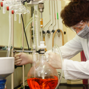
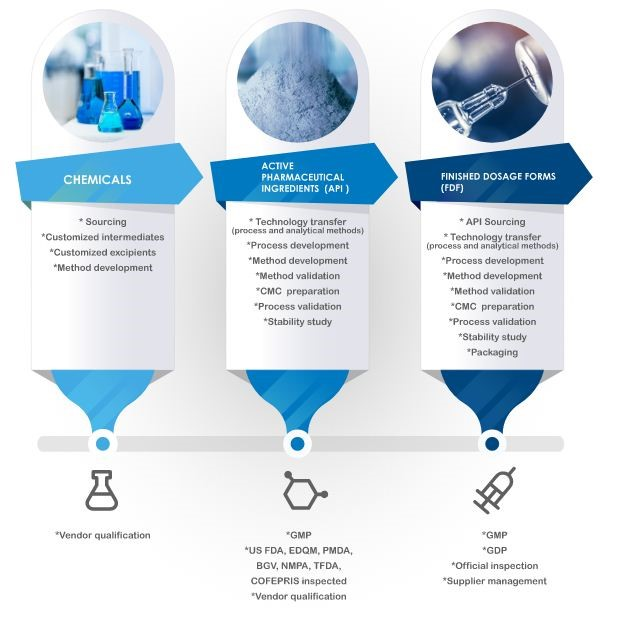

We offer full-service for both general and high potency API (HPAPI) for all stages of drug development for both clinical trial material (CTM) and commercialized
(NDA). Our GMP compliance has been approved by DOH of Taiwan, US FDA,
BGV of Germany, EDQM and PMDA of Japan since 2000.
Process development and route optimization are core competencies of our
business. The company has a dedicated staff of professional process chemists and engineers with significant experience and expertise in the development of robust cGMP chemical processes.


Process Research

Our chemical development capabilities include:
 Development of chemical processes
Development of chemical processes
Process research, development, and optimization
Overcoming challenging process bottlenecks
Scaling-up laboratory and pilot processes to plant-size
equipment
Process Safety/Hazard Assessment
Product characterization and purity assessment (HPLC, GC, GCMS, LCMS,
Heavy Metals, Karl Fischer)
Dedicated process analytical support
Parametric/DoE studies
QbD approaches
Operation and Training for high-potency API
Antibody-drug-conjugate
Typical process enhancements include improvements in yields, reduction in
the number of steps and operations, reduction of volume, eliminating
chromatography, scalability, safety, robustness, environmental impact and
cost.
Analytical Support
We have supports of providing comprehensive analytical support spanning
early-stage development through commercial API manufacturing. We
understand the importance of timely and quality analytical support to the
success of your project. Therefore, we maintain a high ratio of analytical
support to chemists and engineers on a project.
Analytical capabilities for the support of cGMP/API manufacturing
processes include:
Methods development
Methods validation
Specification development/material testing
Structural analysis
Impurity isolation and identification
Product characterization and purity assessment (HPLC/UPLC, GC, GCMS,
LCMS, Heavy Metals, Karl Fischer)
ICH stability studies (storage and testing)
Reference standard qualification
API solids characterization
Cleaning method development and validation
Test and release of starting materials, intermediates and final
products
Impurity profiling
Sterility test
Microbial Identification
Regulatory Service
A comprehensive regulatory support encompassing early-stage drug substance
development through commercial API manufacturing including filing support
for Investigational New Drug Applications (INDs), New Drug Applications
(NDAs), Abbreviated New Drug Applications (ANDAs) and Drug Master Files
(DMF) as well as regulatory strategic planning.
Injectable Manufacturing Services
We provide one-stop solutions for sterile injectable drug products to our
customers. Our state-of-the-art injectable manufacturing facility and team
of dedicated experts are capable to provide services from contract
development to commercial manufacturing.
Injectable facilities for cytotoxic, non-cytotoxic and highly potent
drugs
Small molecules and biologics filling for pre-filled syringe and vial
(PFS, vial) and lyophilization (Lyo)
Excellent sterility assurance level provided by barrier isolator
technology
An advantage for oxidization sensitive biologics with low hydrogen
peroxide (H2O2) residual design based
One Stop Solution Services
From Chemicals to Pharmaceuticals
From IND to NDA/ANDA/BLA filing
From Lab to Commercial manufacturing
From GSP compliant RD lab to GMP compliant manufacturing
